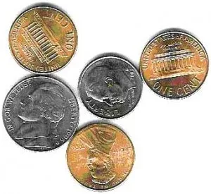

Andrew Nolan's Blog
Andrew's Blog


The title of this chapter is "Usability Testing on 10 cents a day," but because this book was originally published in 2000, with inflation this is more like 18 cents a day now...
Every site needs usability testing. But oftentimes it is overlooked and enters a scenario where it is too little, too late, and for the wrong reasons.
If you want a good site you need to do usability tests. The longer you work on something the harder it is for you to judge it with unbiased eyes. When people start using your site you will get to see it from a different perspective and learn more about how it will actually be used.
Before we jump in, we should clear up a common misconception about usability testing. Usability testing is not the same thing as a focus group. Usability testing is designed to capture issues. Focus groups are designed to determine if ideas are viable.
Although we are going to focus on usability tests. We can highlight the use of focus groups as well.
Focus groups involve talking with a small group of people and gathering their opinions. The best time to do a focus group is before building the product. This can determine if there is a market for your idea from a good sample size.
Usability testing is not a group activity. Each test should have one participant at a time. During the usability study you don't need to ask questions, you just need to watch a user complete a task.
That's it! If you've read this far you now know enough. Get some users and watch them use your website. This is usability testing and it's the best way to identify issues with your site.
Of course, we can go into a lot more detail. So if you want to stick around and read a bit more, let's get into it!
Usability experts are expensive. If you are lucky enough to have access to one, make sure you work closely with them and treat them with the respect they deserve. But, if you do not have a UX expert to work with you can still do usability testing on your own!
There are just a few simple questions we need to answer to explain the steps you need for user testing on a budget.
Krug recommends user testing one morning per month. Half a day is enough time to get through a few users and have time to debrief.
Dev teams are usually busy, but if you can find time for one morning a month you'll get more than enough usability data. This cadence will also set up a good habit and will guarantee more members of your team can attend.
Like most things in UX, it depends. Krug recommends three. The famed HCI consultant, Jakob Neilsen, says only 5 users are needed to get almost as many problems identified.
Whatever number you choose, it's important to remember we are not trying to make a scholarly article. We don't need statistically significant results. We just want feedback. A few users taking a look will capture almost all issues. Showing the same thing in a usability test many times will start to get diminishing returns as users point out the same thing.
It is also important to remember, one user is better than none. Any feedback is a good step to perfecting your site.
Timing matters too, you want to start testing early. One user test early is better than several later ones. It's hard to fix things once they are in production.
Get participants however you can!
You can recruit loosely and grade on a curve. People often try to find their target audience, but remember, any users are better than none. You'll still get feedback even from people not in your audience. It will make recruitment easier and at some point all users are beginners anyway.
Don't worry about making things clear and easy for beginners from this feedback. Experts are rarely offended if a site is also designed for newcomers.
However you can! Ask coworkers who haven't seen your project. Ask your family or roommates. Make some posts on social media. All feedback is good. We all use software and websites. Everyone will have some feedback to share.
If you do need to recruit strangers, it's good to offer some compensation or incentive. Anywhere in the $50 to $100 range is recommended for an hour long usability study.
Any quiet place that won't be interrupted. The most important thing is that you have a way to record the screen and capture all content. It's good to take notes while the study is going, but it's good to be able to review later.
In the past, usability labs or special rooms were used for studies, but these days that isn't necessary. One good thing to come out of the pandemic is an increase in remote work. If you can hop on Zoom or Teams or Discord with a user, that works perfect for a test as well.
Anyone can run the test. You do not need special skills. If you've read this blog you are ready to go!
As long as you can be calm, patient, and not provide too much guidance. You want to ensure the user stays on track and is comfortably focused on the tasks.
Everyone! Or at least as many people as possible.
Usability testing is all about observing a user interacting with your site. Having more observers will get more perspectives on this study.
Just make sure to debrief and share notes afterwards!
The debriefing is a chance to decide and prioritize what problems to solve. Focus ruthlessly on fixing the most serious problems first. Try to avoid falling for picking low hanging fruit. If you have multiple observers, if there is overlap of their notes, that's a good sign it's a big issue.
We spent a lot of time talking about why usability tests are important, but not as much on how to run them.
Remember, it's just about having a user looking at your site and giving feedback. It's good to have some tasks lined up that you want them to try.
If you feel more comfortable with a bit of a script, you can design it around these points:
Usability studies are the most important part of designing a good site. We can discuss and theorize about everything. But at the end of the day, the opinions of real users are most important.
I know this was a long blog post, but hopefully it made it less scary and possible to do usability tests on a budget. Don't let your teammates make excuses, testing your app is the best thing you can do to improve your UX!
Enjoyed this article? Subscribe to the RSS Feed!